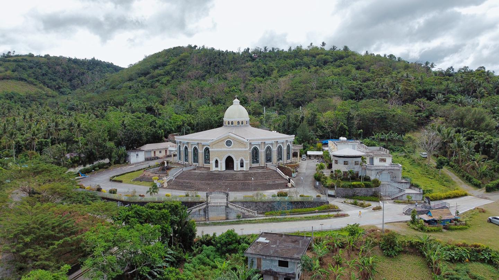
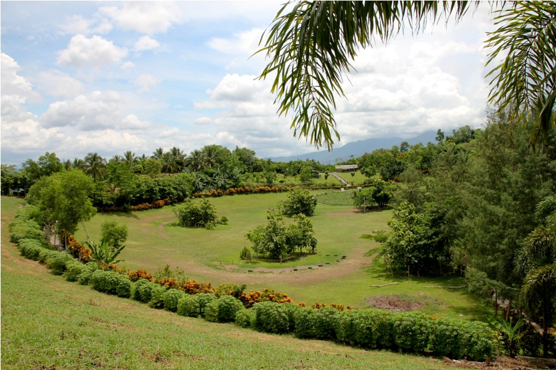
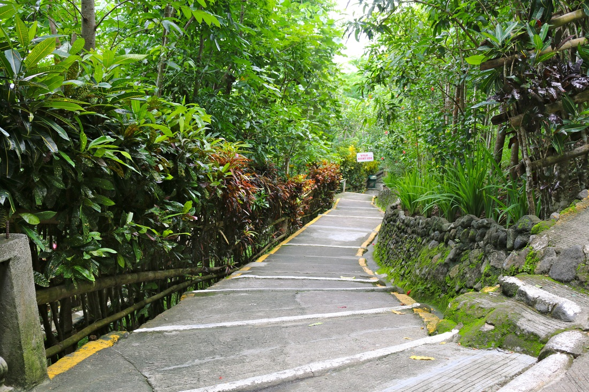
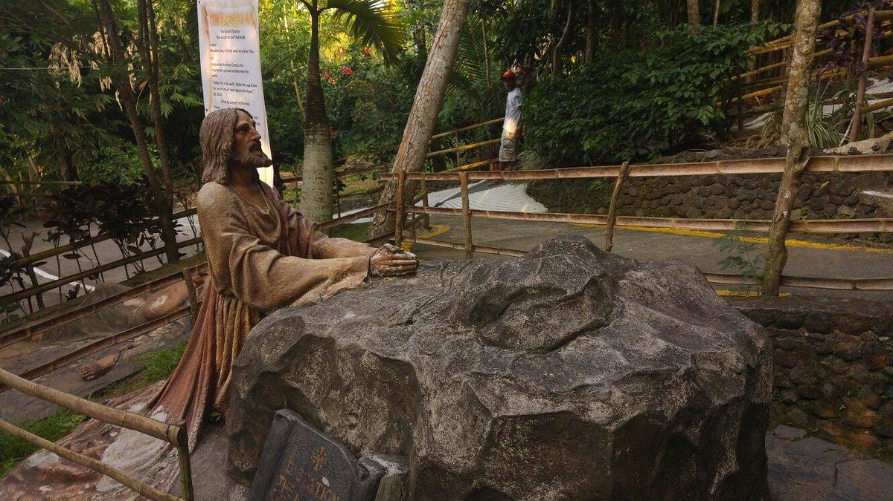

Kawa-Kawa Hill

Ligao, Albay
Embark on a journey of spiritual serenity and leisure at Kawa Kawa Hill, a haven nestled at the heart of tranquility. With vast lawns inviting picnics, serene gardens, and shaded spots for relaxation, this destination beckons tourists seeking both spiritual rejuvenation and a blissful escape into nature.
Father Jovic Lobrigo is credited with bringing Kawa Kawa to the attention
of the religious and cultural community. His vision is to establish a place of pilgrimage
which blends spiritually, art and the natural world. On the hill, Father
Lobrigo oversaw the construction of the Stations of Cross which are adorned with life size
statues that represent the events of Christ’s Passion. Travelers ascend the hill pausing at
each location for contemplation and prayer and eventually
arriving at the summit where the Shrine of the Divine Mercy is located.

Photo | Naga City Deck

Photo | The Chronicles of Mariane

Visitors Experience and Activities:
The lush Bicolano countryside serves as a backdrop for life-size sculptures
that depict the Stations of the Cross as you ascend the hill. This spiritual journey
offers a special fusion of religious devotion and natural beauty in a calm and
contemplative setting.
In addition to providing a spiritual experience, Kawa Kawa Hill is a welcoming spot
for fun and relaxation. The vast lawns at the foot of the hill offer gardens, picnics
and shaded spots where visitors can relax and rest. Families, and groups of friends or
even lone travelers seeking a tranquil getaway will find this place ideal.

Photo | BicolDeck

Photo | Trip Advisor
Gil Jose Penaflor
The journey began with a challenging but rewarding hike up Kawa-Kawa Hill. The well-maintained trail winds through lush vegetation, offering glimpses of the majestic Mayon Volcano as you ascend. The climb took about an hour, but the breathtaking views from the top made every step worthwhile, as well as the religious and spiritual journey it comes with.💯🙏🤲
3 days ago